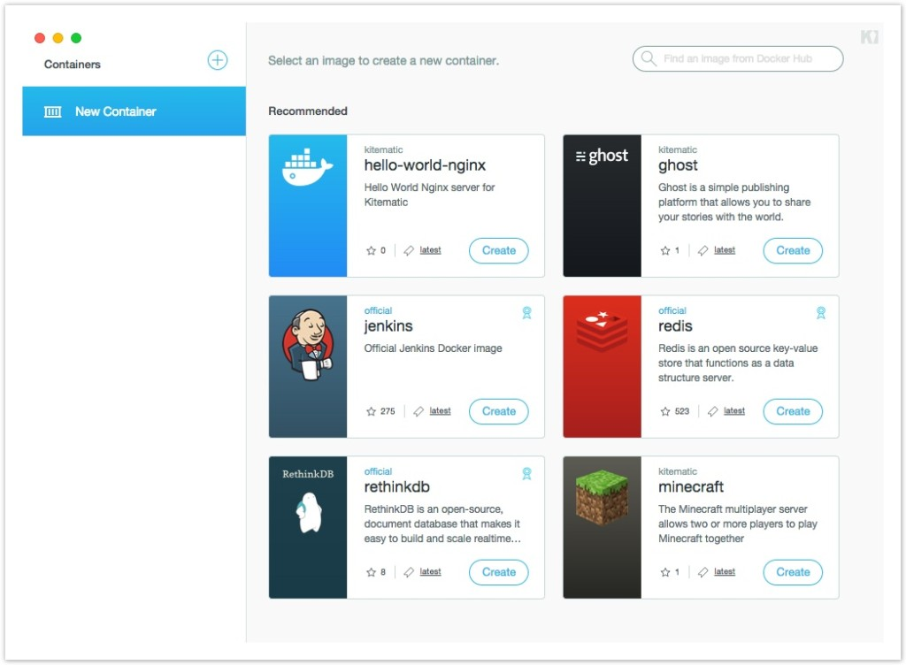

Log.io
Real-time log monitoring in your browser
Agenda
Meetup a lo salvaje
En memoria de Gacela Thompson

¿Qué es Log.io?
Logs en tiempo real en tu propio navegador
Sin tener que acceder a los servidores

Problemas
Actualmente probamos el código en los entornos pero cuando llegamos a producción no siempre sale bien

Buscando el problema
Nos tenemos que conectar a mil nodos para encontrar el error
Varios tipos de logs: Apache, Aplicación, Sistema...
De repente un error salvaje apareció

Instalemos Log.io
Se instala una máquina virtual con docker en ella, al estilo phansible que os presenté en el anterior meetup.
:: Docker run ::
Vamos a comprobar que nuestro entorno está listo
$ docker version$ docker run hello-worldDocker run - Basics
$ docker ps$ docker ps -a$ docker run -it busybox$ docker search nginxDocker volumes
Docker nos permite pasar ficheros a nuestros contenedores
o nos permite mapear un directorio de nuestro disco local al contenedor
$ docker run -it -v ~/webapps:/webapps:ro myimageDockerfiles
Ficheros de configuración parar crear nuestras imágenes
Es una receta paso a paso con las acciones a realizar en la creación de una imagen que posteriormente ejecutaremos
Dockerfiles - Ejemplo
FROM ubuntu:14.04
RUN apt-get -y install apache2
CMD ["/usr/sbin/apache2ctl", "-D", "FOREGROUND"]Dockerfiles - Libreria
Podemos utilizar dockerfiles ya creados
https://github.com/docker-library
https://registry.hub.docker.com/
Vaya tostón, ¿una demo?


UI Management
Existe un contenedor que se conecta con docker host para gestionarlo
$ docker run -d -p 9000:9000 --privileged -v /var/run/docker.sock:/var/run/docker.sock
dockerui/dockeruiKitematic
También existe GUI para la gestión desde Mac
Mucho más
Cualquier duda ya sabéis dónde encontrarme =)